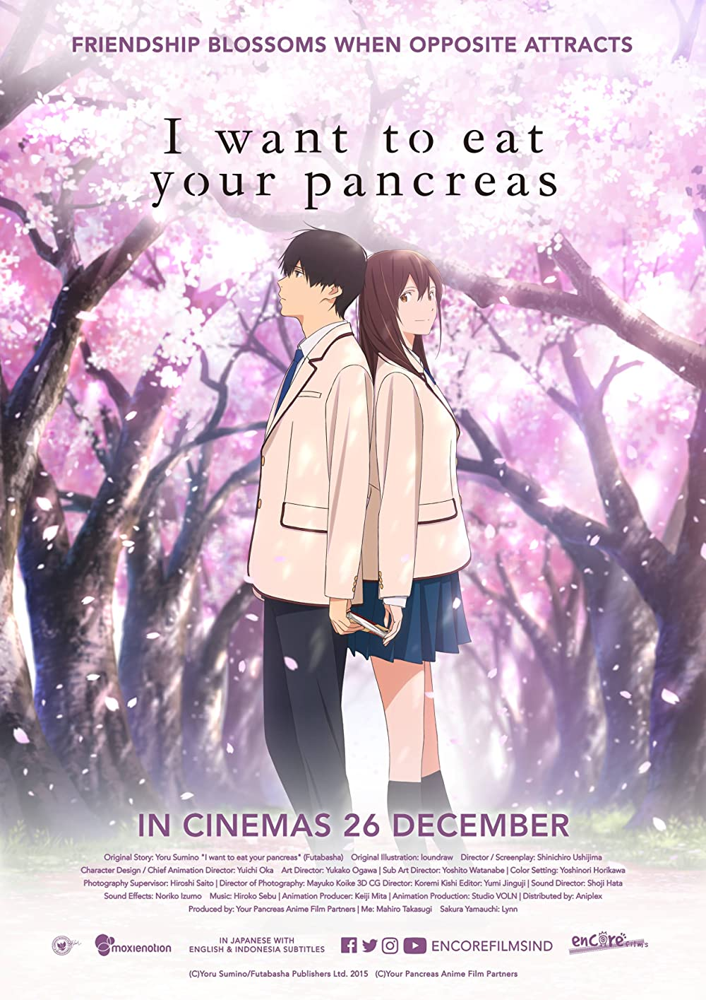

I want to eat your pancreas - Yoru Sumino

Overview & Recap
I want to eat your pancreas is a sad romance/drama anime movie based off of the manga of the same name. its about Haruki Shiga, who is a quiet aloof type of kid with no friends (just like me :D). he meets Sakura Yamauchi, a popular, bright, outgoing girl with a fatal pancreatic illness. He is the only one that knows of her illness and accompanies her as she finishes her bucket list.
Review
um. if i am completely honest i was disappointed after watching this. i had some high expectations due to how much the people around me talked about it and i wanted to watch it for the longest time. I first read the manga but i didnt connect with the characters at all so i didnt find it really sad. to be honest i found the girl pretty annoying at times so i thought maybe the anime is better. Its pretty much the same thing. I didnt find the anime as emotional as other people did but i think thats my problem... it was a really pretty anime though, you should watch it if ur into those really soft animes :)
Rating
hmhmhm 1.5/5 i didnt really enjoy it but im willing to give it another try... maybe if i watch it with friends or smth... hm